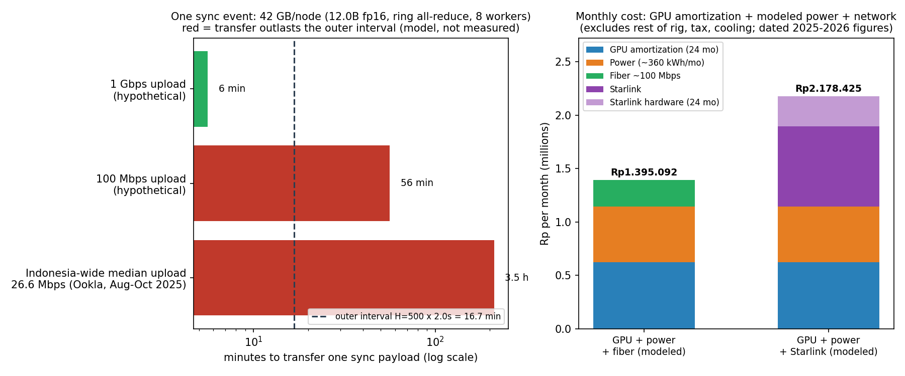

How feasible is distributed AI training from Jakarta, Indonesia, and how can people contribute? The full notes live in the GitHub repository.
This page is a static overview. The analysis below was produced by
feasibility_model.py, which runs locally with Python -
nothing runs in your browser, and no live swarm, GPU, or paid compute is involved.
git clone https://github.com/irvan-putra/gotong.git cd gotong python3 -m pip install matplotlib # only needed for --viz python3 feasibility_model.py # text report python3 feasibility_model.py --viz feasibility.png # charts (needs matplotlib)
Defaults model a 12B-parameter example; override with
--params-b, --workers, --step-time,
--inner-steps, --compression.

tap the image to open it full size
What the model shows, using the dated public figures in the README:
Everything here is a model over dated, sourced figures compiled on 15 Nov 2026 - nothing was measured from an Indonesian home connection, and the bandwidth medians are Indonesia-wide, not Jakarta-specific. The biggest claims in the field (40B pretraining over the internet, DiLoCo at frontier scale) come from the teams proposing them. See the README's caveats and sources.
Suggestion, not a commitment or a result: replace assumptions with measured upload and transfer times before trying a training node. Keep measurements private initially.
Across the four sibling repos (gotong, mimpi, anyam, jejak): choose just one next rather than abandoning the others; jejak is the suggested first pick as the clearest, lowest-commitment test.